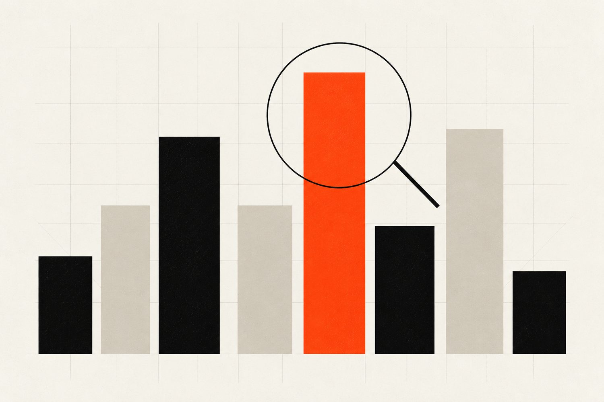

BrokersSelect
Forex broker reviews and comparison platform.
BrokersSelect runs a forex broker review and comparison platform built around an AI matching flow, a searchable broker database, and side by side comparison tools. The site monetises through broker referrals, which puts pressure on conversion quality, content velocity, and trust signals like regulator coverage. This is the kind of build that benefits from tight product engineering, clean information architecture, and infrastructure that can keep up with constant catalogue and content changes.
Visit brokersselect.com